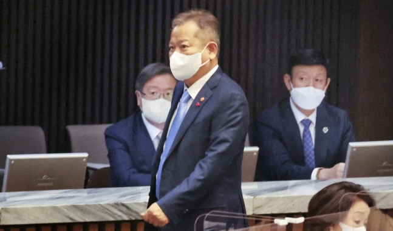

일요일인 이날 본회의의 안건은 이 장관 해임건의안 1건이었다.결국 이날 본회의는 국민의힘의 개의 반대에 이례적으로 공휴일 개의 안건을 표결한 끝에 열렸다. 앞서 일요일인 올해 5월 29일과 부처님오신날인 2020년 4월 30일 등에 추가경정예산안 및 법안 등을 처리하기 위한 본회의가 여야 합의로 같은 절차를 거쳐 공휴일에 개최된 바 있다. 이날 오전 10시 열린 본회의는 시작부터 소란스러웠다.
이 장관 해임건의안에 반대하는 국민의힘 의원들은 '이재명 방탄 NO 진상규명 YES', '거짓민생 국민기만 민주당은 각성하라' 등 손팻말을 들고 본회의장에 입장했다. 이들은 자리에서 일어나 손팻말을 들고 "이재명 방탄" 구호를 외쳤다. 더불어민주당 측에서는 "이게 뭡니까"라는 고성과 항의가 터져 나왔다.